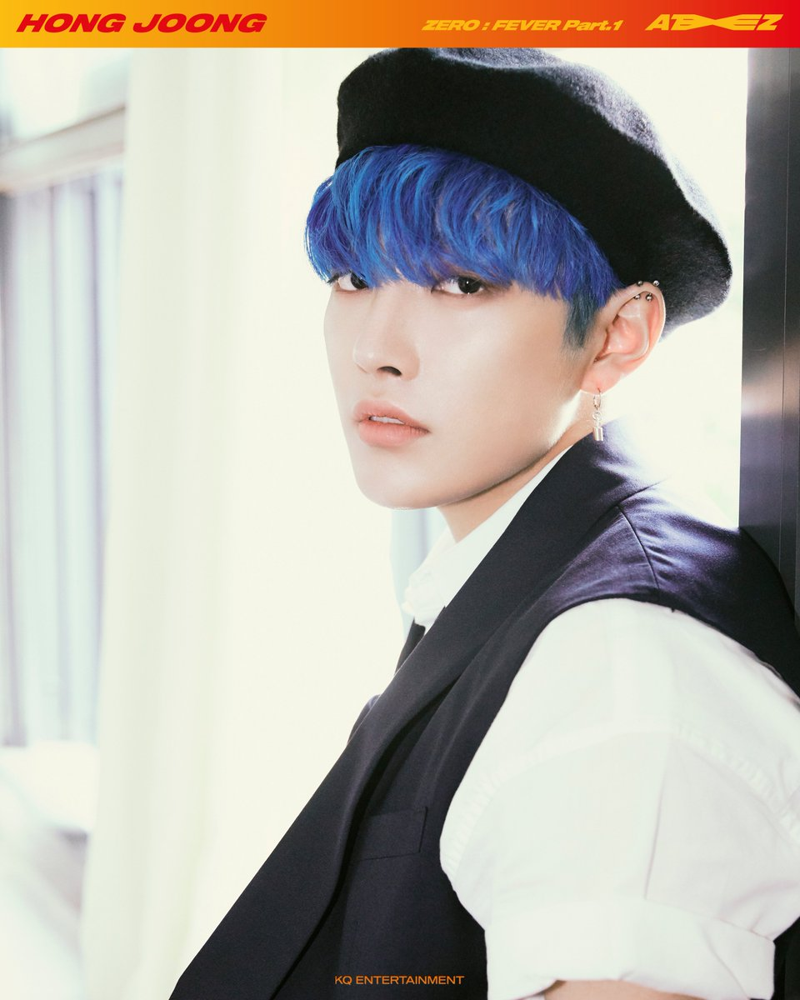
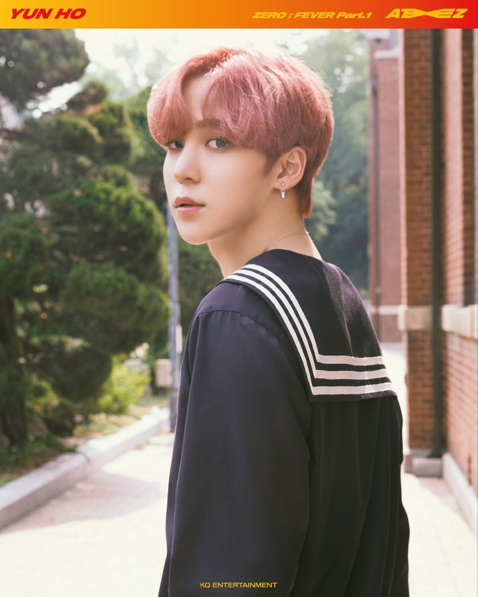
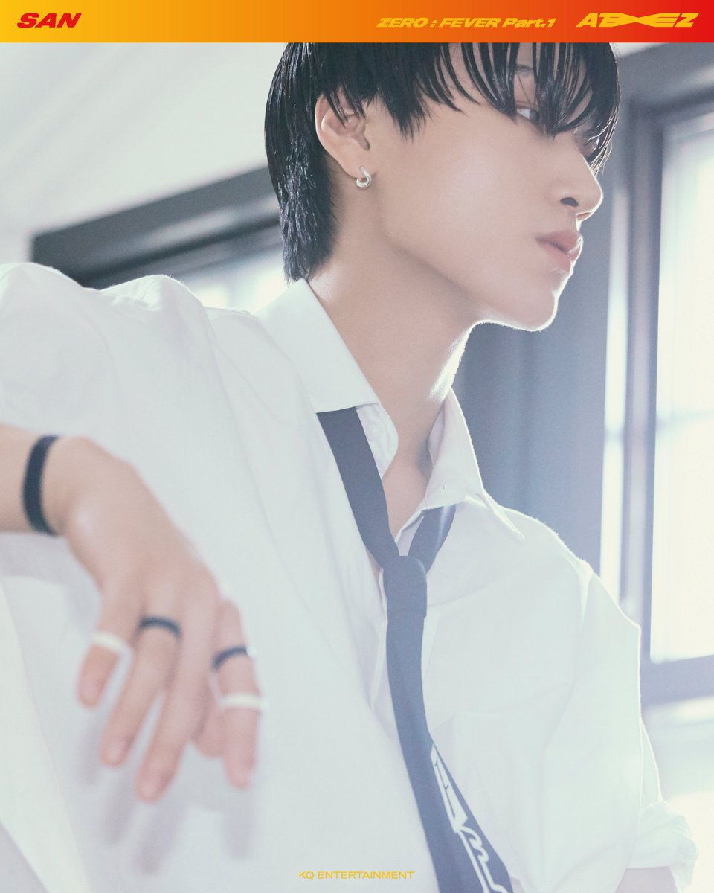
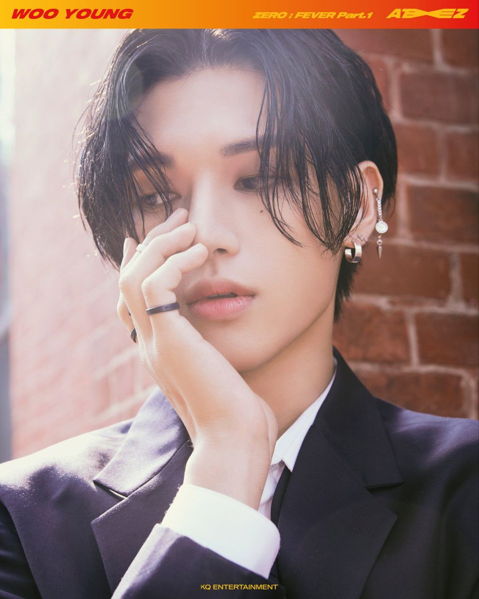
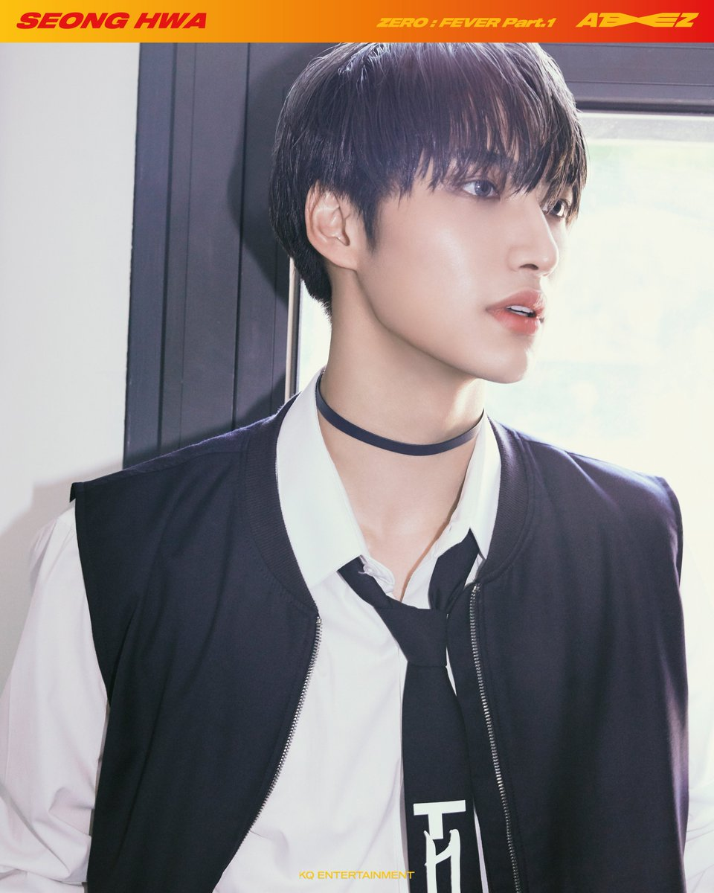
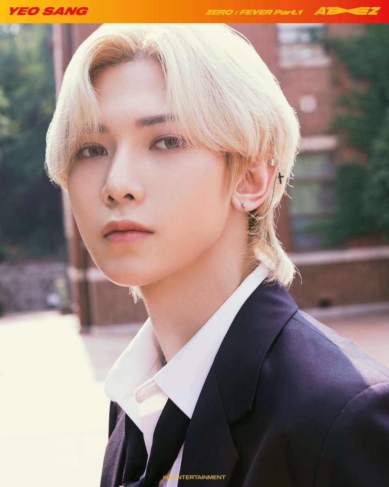
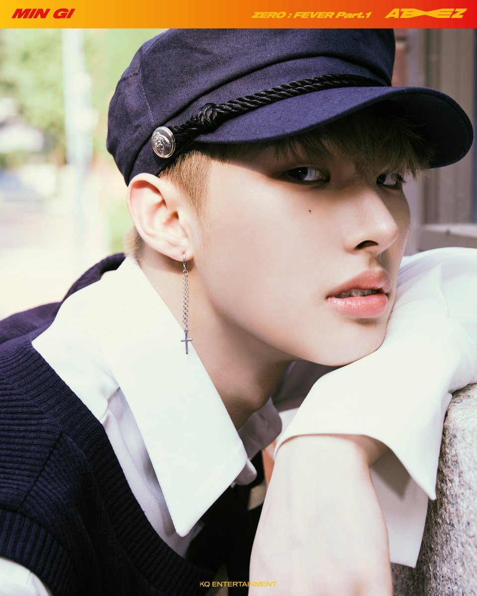

Hongjoong (홍중)

Name: Hongjoong (홍중)
Birth name: Kim Hong Joong (김홍중)
Position: Leader, Rapper, Composer, Center
Birth date: November 7th, 1998
Birth place: Anyang, South Korea
Zodiac Sign: Scorpio
Height: 171cm (5'7")
Blood type: B
MBTI type: INFP
Yunho (윤호)

Name: Yunho (윤호)
Birth name: Jeong Yun Ho (정윤호)
Position: Main Dancer, Vocalist
Birth date: March 23rd, 1999
Birth place: Gwangju, South Korea
Zodiac Sign: Aries
Height: 186cm (6'1")
Blood type: A
MBTI type: ENFJ
San (산)

Name: San (산)
Birth name: Choi San (최산)
Position: Vocalist
Birth date: July 10th, 1999
Birth place: Namhae, South Korea
Zodiac Sign: Cancer
Height: 175.5cm (5'9")
Blood type: B
MBTI type: INFP
Wooyoung (우영)

Name: Wooyoung (우영)
Birth name: Jung Woo Young (정우영)
Position: Vocalist, Dancer
Birth date: November 26th, 1999
Birth place: Ilsan, South Korea
Zodiac Sign: Sagittarius
Height: 173cm (5'8")
Blood type: A
MBTI type: ESFJ
SIDE NOTE:
*: 'Maknae' means 'the youngest'
When a K-POP idol is the youngest in the band, they're the 'Maknae' of the group.
!: Don't get confused by the positions! All members dance together, it's not like only the 'dancers' dance. If someone's position is 'dancer' it just means they're better than the rest at it!
The same thing counts for vocalists and rappers. Some rappers do sing sometimes (mostly Hongjoong in this case) and some vocalists rap sometimes (mostly Seonghwa in this case).
Seonghwa (성화)

Name: Seonghwa (성화)
Birth name: Park Seong Hwa (박성화)
Position: Vocalist, Visual
Birth date: April 3rd, 1998
Birth place: Jinju, South Korea
Zodiac Sign: Aries
Height: 178cm (5'10")
Blood type: O
MBTI type: ESFJ
Yeosang (여상)

Name: Yeosang (여상)
Birth name: Kang Yeo Sang (강여상)
Position: Vocalist, Dancer, Visual
Birth date: June 15th, 1999
Birth place: Pohang, South Korea
Zodiac Sign: Gemini
Height: 174.7cm (5'9")
Blood type: A
MBTI type: ISFJ
Mingi (민기)

Name: Mingi (민기)
Birth name: Song Min Gi (송민기)
Position: Main Dancer, Rapper
Birth date: August 9th, 1999
Birth place: Incheon, South Korea
Zodiac Sign: Leo
Height: 183cm (6'0")
Blood type: B
MBTI type: ENTP
Jongho (종호)
Name: Jongho (종호)
Birth name: Choi Jong Ho (최종호)
Position: Main Vocalist, Maknae*
Birth date: October 12th, 2000
Birth place: Seoul, South Korea
Zodiac Sign: Libra
Height: 176cm (5'9")
Blood type: O
MBTI type: ESFJ